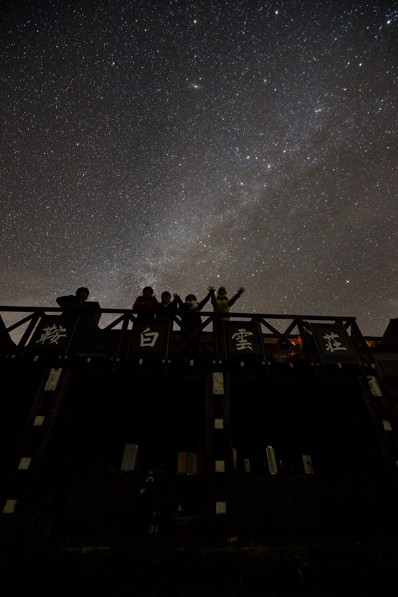
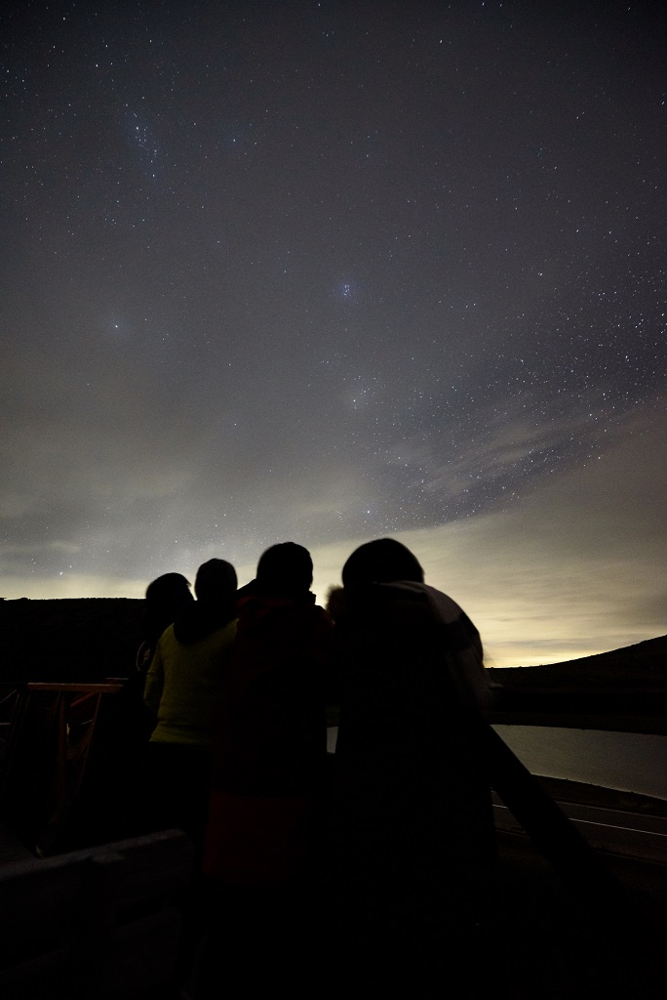
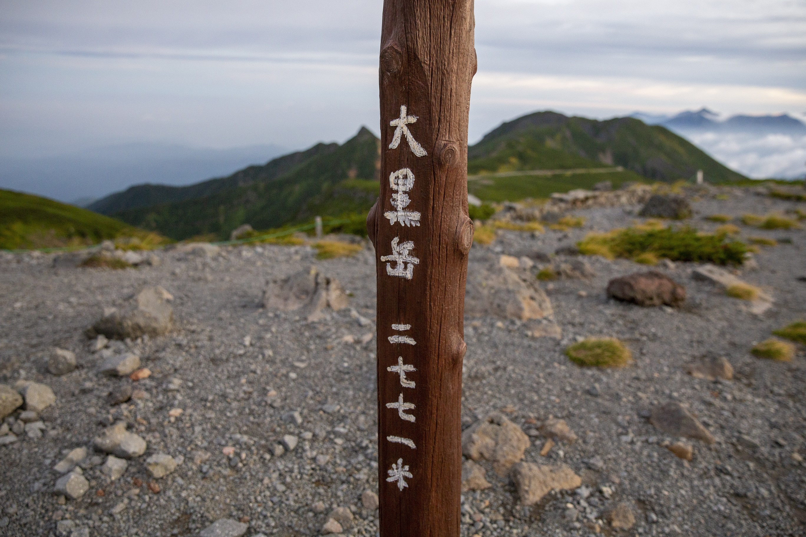
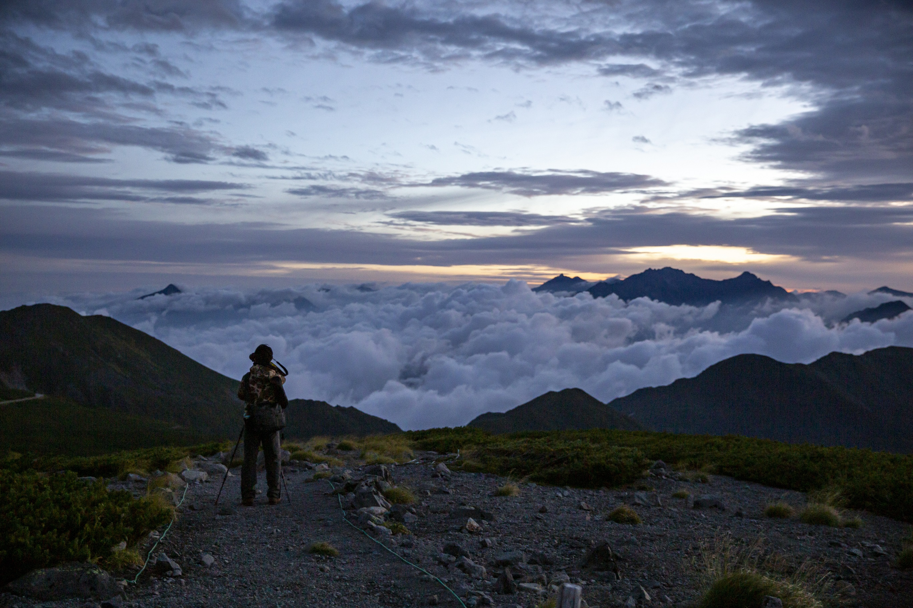
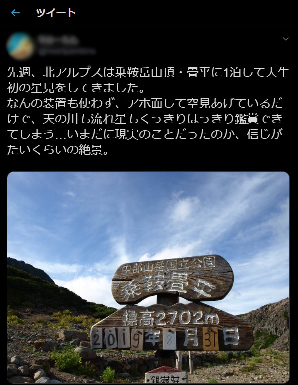

<!DOCTYPE html>
<html>

<head><meta name="generator" content="Hexo 3.8.0">
  <meta charset="utf-8">
  
  <title>【遠征記】2019年8月 乗鞍岳 | ほしよみ大学生のブログ</title>
  <meta name="viewport" content="width=device-width">
  <meta name="description" content="あいさつ今年も行ってきました乗鞍．大学に入ってから毎年行き続けて，もう5回目になります．今回はその時のお話を少し書きます．">
<meta name="keywords" content="写真,遠征記,天体写真">
<meta property="og:type" content="article">
<meta property="og:title" content="【遠征記】2019年8月 乗鞍岳">
<meta property="og:url" content="http://dabokun.github.io/2019/09/29/00000019-2019-08-30-norikura/index.html">
<meta property="og:site_name" content="ほしよみ大学生のブログ">
<meta property="og:description" content="あいさつ今年も行ってきました乗鞍．大学に入ってから毎年行き続けて，もう5回目になります．今回はその時のお話を少し書きます．">
<meta property="og:locale" content="ja">
<meta property="og:image" content="http://dabokun.github.io/2019/09/29/00000019-2019-08-30-norikura/card.jpg">
<meta property="og:updated_time" content="2019-09-30T00:51:56.068Z">
<meta name="twitter:card" content="summary_large_image">
<meta name="twitter:title" content="【遠征記】2019年8月 乗鞍岳">
<meta name="twitter:description" content="あいさつ今年も行ってきました乗鞍．大学に入ってから毎年行き続けて，もう5回目になります．今回はその時のお話を少し書きます．">
<meta name="twitter:image" content="http://dabokun.github.io/2019/09/29/00000019-2019-08-30-norikura/card.jpg">
<meta name="twitter:creator" content="@dabo_pic">
  
  <link rel="alternative" href="/atom.xml" title="ほしよみ大学生のブログ" type="application/atom+xml">
  
  
  <link rel="icon" href="/images/favicon.png">
  
  <link rel="stylesheet" href="/css/style.css">
  <!--[if lt IE 9]><script src="//html5shiv.googlecode.com/svn/trunk/html5.js"></script><![endif]-->
  
</head></html>
<body>
  <div id="container">
    <div class="mobile-nav-panel">
	<i class="icon-reorder icon-large"></i>
</div>
<header id="header">
	<h1 class="blog-title">
		<a href="/">ほしよみ大学生のブログ</a>
	</h1>
	<nav class="nav">
		<ul>
			<li><a href="/">Home</a></li><li><a href="/categories">Categories</a></li><li><a href="/tags">Tags</a></li><li><a href="/archives">Archives</a></li><li><a href="/about">About</a></li><li><a href="/work">Work</a></li>
			<li><a id="nav-search-btn" class="nav-icon" title="Search"></a></li>
			<li><a href="https://github.com/dabokun"></a>
			</li>
			<li><a href="https://twitter.com/dabo_pic"></a></li>
			<li><a href="/atom.xml" id="nav-rss-link" class="nav-icon" title="RSS Feed"></a>
			</li>
		</ul>
	</nav>
	<div id="search-form-wrap">
		<form action="//google.com/search" method="get" accept-charset="UTF-8" class="search-form"><input type="search" name="q" class="search-form-input" placeholder="Search"><button type="submit" class="search-form-submit">&#xF002;</button><input type="hidden" name="sitesearch" value="http://dabokun.github.io"></form>
	</div>
</header>
    <div id="main">
      <article id="post-00000019-2019-08-30-norikura" class="post">
	<footer class="entry-meta-header">
		<span class="meta-elements date">
			<a href="/2019/09/29/00000019-2019-08-30-norikura/" class="article-date">
  <time datetime="2019-09-29T11:00:00.000Z" itemprop="datePublished">2019-09-29</time>
</a>
		</span>
		<span class="meta-elements author">astr0dab0</span>
		<div class="commentscount">
			
			<a href="http://dabokun.github.io/2019/09/29/00000019-2019-08-30-norikura/#disqus_thread" class="article-comment-link">Comments</a>
			
		</div>
	</footer>
	
	<header class="entry-header">
		
  
    <h1 class="article-title entry-title" itemprop="name">
      【遠征記】2019年8月 乗鞍岳
    </h1>
  

	</header>
	<div class="entry-content">
		
		
		<div id="toc" class="toc-article">
			<p class="toc-title">目次</p>
			<ol class="toc"><li class="toc-item toc-level-3"><a class="toc-link" href="#あいさつ"><span class="toc-number">1.</span> <span class="toc-text">あいさつ</span></a></li><li class="toc-item toc-level-3"><a class="toc-link" href="#病み上がり"><span class="toc-number">2.</span> <span class="toc-text">病み上がり</span></a></li><li class="toc-item toc-level-3"><a class="toc-link" href="#まさかのピンチ？"><span class="toc-number">3.</span> <span class="toc-text">まさかのピンチ？</span></a></li><li class="toc-item toc-level-3"><a class="toc-link" href="#晴れ間"><span class="toc-number">4.</span> <span class="toc-text">晴れ間</span></a></li><li class="toc-item toc-level-3"><a class="toc-link" href="#朝焼け"><span class="toc-number">5.</span> <span class="toc-text">朝焼け</span></a></li></ol>
		</div>
		
		<h3 id="あいさつ"><a href="#あいさつ" class="headerlink" title="あいさつ"></a>あいさつ</h3><p>今年も行ってきました乗鞍．大学に入ってから毎年行き続けて，もう5回目になります．今回はその時のお話を少し書きます．</p>
<a id="more"></a>
<h3 id="病み上がり"><a href="#病み上がり" class="headerlink" title="病み上がり"></a>病み上がり</h3><p>日程は8月30日～9月1日だったのですが，なんと8月24日頃から体調を崩し，前々日まで39℃近い熱を出すという事態に．<br>夏風邪をひくということはそうそう無いのですが，よりにもよって毎年楽しみにしている乗鞍の直前にひいてしまって割と絶望しました．が，なんとか前日までに解熱剤なしで平熱まで戻したので参加しました．</p>
<h3 id="まさかのピンチ？"><a href="#まさかのピンチ？" class="headerlink" title="まさかのピンチ？"></a>まさかのピンチ？</h3><p>さて，去年から我々はバスを一台貸し切って畳平まで上がるようにしています．出発当日の天気は芳しくなく，これはいつものことだったのですが，松本手前のPAで，何やら乗鞍エコーラインという，畳平までの道が時間で封鎖される可能性があるという不穏情報が舞い込んできました．<br>話を聞いてみると，どうやらエコーラインの天気は今いる場所よりも相当悪いようで，危険なので畳平発の最終便で封鎖されるとのこと．我々のバスはちょうど間に合うか間に合わないかというタイミングだったので，ここで運転手さん，めちゃくちゃ飛ばします笑<br>エコーラインの山道を，観光バスは40～60km/h(これは流石に盛りすぎ？)ほどのスピードでぐんぐん上がっていきます．勾配のきついカーブはエンストしないように一速全開．前後左右上下にぐわんぐわん揺られます．病み上がりで後方の座席に座っていた私．完全に酔いました．<br>到着してみると畳平は本当に濃霧の土砂降り．荷物運ぶ作業をするわけですが気分の悪い私は軽めの機材だけ運びました．<br>そんなこんなで一日目は全く晴れる気配もなく，宿でひたすらゴキブリポーカーをやっていましたとさ．ゴキブリポーカー，有名なボードゲームですがこの時初めてやってハマりました．こういうルールがシンプルなゲーム好きですね．</p>
<h3 id="晴れ間"><a href="#晴れ間" class="headerlink" title="晴れ間"></a>晴れ間</h3><p>2泊目の昼間は気持ちよく晴れたので，機材を出しに行ったり，病み上がりで無理はせず宿の周りを散歩したり．今年はライチョウに会えなかったのが少し残念でした．<br>夜になると結局また曇りだしたので，ちょくちょく見に出たりを繰り返しているとそれなりの晴れ間に遭遇．眼視用のR200SSを展開し，普段は観測に来ないフォロワーさんに見せたりしていました．<br>曇ったのでまた宿に戻り，また少し見えたり曇ったりを1,2時間ほど繰り返していると，再び30分ほどの晴れ間に遭遇．機材を展開している場所まで移動するのは時間がもったいないと思い，宿の前でしばらく眺めていました．<br>自分はカメラをその時機材置き場に置いていたので，宿の前でカメラを使えたKくんやTくんに何枚か写真を撮ってもらいました．</p>
<p>宿（乗鞍白雲荘）の前にて（K君撮影）　やっぱり乗鞍の星空は別格！<br></p>
<p>宿の前にて（K君撮影）　雲がありますが，これもこれで幻想的ですね．<br></p>
<h3 id="朝焼け"><a href="#朝焼け" class="headerlink" title="朝焼け"></a>朝焼け</h3><p>朝もいい感じの天気になるだろうと思い，日の出頃に何人かで近場の大黒岳に登りました．富士見岳や魔王岳，剣ヶ峰は登ったことがありますが，大黒岳には初めてです．ガレ場も少なく斜面もそれなりに緩やかで，魔王岳と同様登りやすい印象です（ただ魔王岳は奥の方に入っていくと岩場があります）．<br>登ってみると綺麗な雲海が広がっていました．自分は山の人間ではないですが，こういうのを見ると山も良いものだなあと思います．</p>
<p>大黒岳，2771m！<br></p>
<p>今回初参加のフォロワーさん．去年の坂本真綾ライブで友人になりました．<br></p>
<p>時々一緒に出かけるHくん．雲海の向こうには槍や穂高が見えますね．<br></p>
<p>ご来光の時間になると，それ目当ての人たちがモリモリ登ってきたので，混雑する前に撤収しました．</p>
<p>ご来光．乗鞍でちゃんと見るのは意外に初めてかも？<br></p>
<p>それからはいつもどおり，宿で朝ごはんを食べ，貸切バスで帰路につきました．<br>病み上がりでしたがとても充実した時間でした．来年は健康な状態でまた訪れたいものですね．</p>
<p>フォロワーさんにはこんな感想も言ってもらいました．嬉しい．<br></p>

		
	</div>
	<footer class="article-footer">
		<a href="https://twitter.com/intent/tweet?text=%E3%80%90%E9%81%A0%E5%BE%81%E8%A8%98%E3%80%912019%E5%B9%B48%E6%9C%88%20%E4%B9%97%E9%9E%8D%E5%B2%B3｜%E3%81%BB%E3%81%97%E3%82%88%E3%81%BF%E5%A4%A7%E5%AD%A6%E7%94%9F%E3%81%AE%E3%83%96%E3%83%AD%E3%82%B0&url=http://dabokun.github.io/2019/09/29/00000019-2019-08-30-norikura/" class="twitter-share-button" target="_blank" title="Twitter"></a>
		<script async src="https://platform.twitter.com/widgets.js" charset="utf-8"></script>

		<div id="fb-root"></div>
		<script async defer crossorigin="anonymous" src="https://connect.facebook.net/ja_JP/sdk.js#xfbml=1&version=v4.0"></script>
		<div class="fb-share-button" data-href="http://dabokun.github.io/2019/09/29/00000019-2019-08-30-norikura/" data-layout="button_count" data-size="small"><a target="_blank" href="https://www.facebook.com/sharer/sharer.php?u=https%3A%2F%2Fdabokun.github.io%2F&amp;src=sdkpreparse" class="fb-xfbml-parse-ignore">シェア</a></div>
	</footer>
	<footer class="entry-footer">
		<div class="entry-meta-footer">
			<span class="category">
				
  <div class="article-category">
    <a class="article-category-link" href="/categories/expedition/">遠征記</a>
  </div>

			</span>
			<span class=" tags">
				
  <ul class="article-tag-list"><li class="article-tag-list-item"><a class="article-tag-list-link" href="/tags/photography/">写真</a></li><li class="article-tag-list-item"><a class="article-tag-list-link" href="/tags/astrophotography/">天体写真</a></li><li class="article-tag-list-item"><a class="article-tag-list-link" href="/tags/expedition/">遠征記</a></li></ul>

			</span>
		</div>
	</footer>
	
	
<nav id="article-nav">
  
    <a href="/2019/09/30/00000021-sigma-intern/" id="article-nav-newer" class="article-nav-link-wrap">
      <strong class="article-nav-caption">Newer</strong>
      <div class="article-nav-title">
        
          SIGMAの1Dayインターンに行ってきました
        
      </div>
    </a>
  
  
    <a href="/2019/09/24/00000020-ifu-2019/" id="article-nav-older" class="article-nav-link-wrap">
      <strong class="article-nav-caption">Older</strong>
      <div class="article-nav-title">
        
          【告知】面分光研究会2019 で講演します！
        
      </div>
    </a>
  
</nav>

	
</article>


<section id="comments">
	<div id="disqus_thread">
		<noscript>Please enable JavaScript to view the <a href="//disqus.com/?ref_noscript">comments powered by
				Disqus.</a></noscript>
	</div>
</section>

    </div>
    <div class="mb-search">
  <form action="//google.com/search" method="get" accept-charset="utf-8">
    <input type="search" name="q" results="0" placeholder="Search">
    <input type="hidden" name="q" value="site:dabokun.github.io">
  </form>
</div>
<footer id="footer">
	<h1 class="footer-blog-title">
		<a href="/">ほしよみ大学生のブログ</a>
	</h1>
	<span class="copyright">
		&copy; 2020 astr0dab0<br>
		Modify from <a href="http://sanographix.github.io/tumblr/apollo/" target="_blank">Apollo</a> theme, designed by <a href="http://www.sanographix.net/" target="_blank">SANOGRAPHIX.NET</a><br>
		Powered by <a href="http://hexo.io/" target="_blank">Hexo</a>
	</span>
</footer>
    
<script>
  var disqus_shortname = 'astr0dab0';
  
  var disqus_url = 'http://dabokun.github.io/2019/09/29/00000019-2019-08-30-norikura/';
  
  (function(){
    var dsq = document.createElement('script');
    dsq.type = 'text/javascript';
    dsq.async = true;
    dsq.src = '//go.disqus.com/embed.js';
    (document.getElementsByTagName('head')[0] || document.getElementsByTagName('body')[0]).appendChild(dsq);
  })();
</script>


<script src="//ajax.googleapis.com/ajax/libs/jquery/2.0.3/jquery.min.js"></script>


<link rel="stylesheet" href="/fancybox/jquery.fancybox.css" media="screen" type="text/css">
<script src="/fancybox/jquery.fancybox.pack.js"></script>


<script src="/js/script.js"></script>
  </div>
</body>
</html>